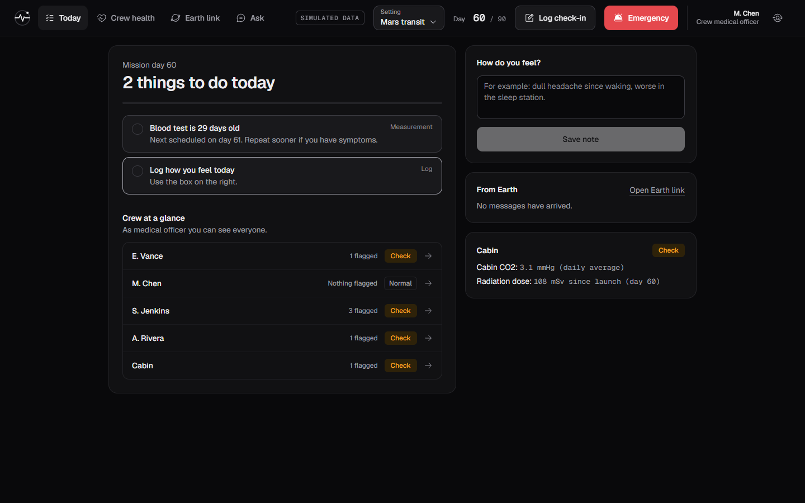
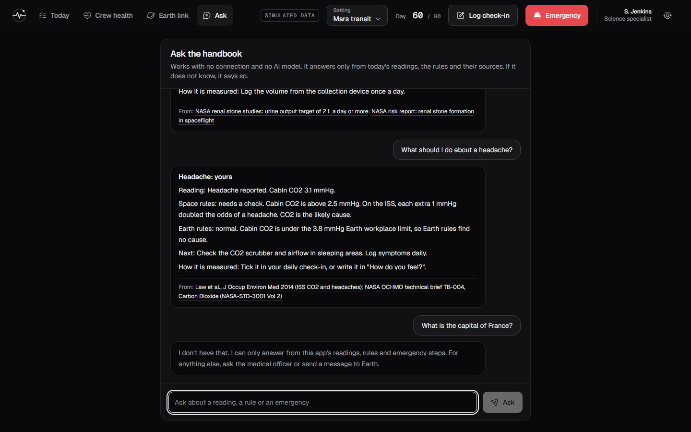
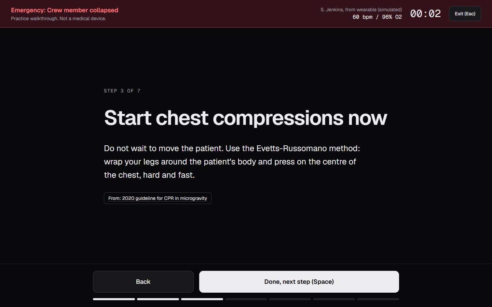

Project Demo & Visuals
The Working Prototype
Screenshots from the running app at crew-health-monitor.vercel.app. All people and readings are simulated.
TEAM[TEAM NAME]
Crew Health: 3D Body + Signal Explained
Neck vein glows, camera moves to it
“Do this next” first
Earth vs space verdict
NASA risk + current study
Today

Trends since launch

Earth link with delay

Ask the handbook

Emergency steps

Heart & blood layer

Body models: BodyParts3D (DBCLS) and HRA 3D Reference Organs (HuBMAP), CC BY 4.004